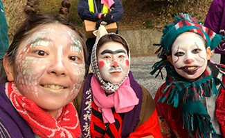

@岩手県気仙郡住田町


事業概要 ABOUT
| 名称 |
ラーニングワーケーションモニターツアー 住田町 |
|---|---|
| 趣旨 | おとりもちと、岩⼿県・住⽥町が連携し開発中のラーニングワーケーションプログラムに参加。フィードバックをいただき、今後のプログラムづくりに⽣かします。 |
| 参加対象 | ・岩⼿県外に本社をおく企業・団体にお勤めの⽅ ・特に、⼈材育成、地⽅創⽣・CSR/SDGs、総務・経営事業企画部⾨の⽅ |
| 場所 | 岩手県気仙郡住田町内 |
| 実施時期 |
2021年12月6日（月） 16時～18時 オンライン事前研修 2021年12月15日（水）～18日（土） 現地研修 2022年1月7日（金） 16時～18時 オンライン事後研修 |
| 特典 |
モニターツアーにつきプログラム参加費無料！ （宿泊費、教材費、オリジナル記念グッズを含みます） |
モニターツアー
開催地について
VENUE
住田町とは？
東京から新幹線で最寄（⽔沢江刺）駅まで約2.5時間。そこから⾞で約50分。遠野、釡⽯、陸前⾼⽥、⼤船渡、奥州に⾯した、内陸の町。⾯積約335㎢。9割を森林が占めています。平安時代、⾦⼭をはじめ養蚕や製鉄で栄えました。
岩⼿県の⼤部分は南部藩ですが、県南部は伊達藩に属し、住⽥町はその北端。今も「五葉⼭⽕縄銃鉄砲隊」が残っています。三陸ジオパークにも指定されている「栗⽊鉄⼭跡」は、国史跡の答申を受けました。
岩⼿県の内陸と沿岸を結ぶ宿場町として栄え、昭和30年代には⼈⼝12,000⼈を記録したこともありますが、現在の⼈⼝は約5,000⼈で、⾼齢化率40％以上となっています。⼈⼝より⿅の数が多い（約7,400〜11,000頭）町です。
-

- 
東京方面からの交通アクセス
東北新幹線 約2時間30分
車で約50分
「森林・林業日本一の町づくり」
住田町
SUMITA
東⽇本⼤震災と住⽥町
住⽥町、陸前⾼⽥市、⼤船渡市の２市１町で「気仙地⽅」と呼ばれています。
東⽇本⼤震災時、国や県の指⽰を待たずに、発災後3⽇⽬には町独⾃の判断で⽊造⼀⼾建の応急仮設住宅の建設を開始。町内全域で３団地93⼾、ピーク時は91世帯が居住しました。
住⺠同⼠のつながりが強く、互いに⾒守りあう環境ができていたことから町内の安否確認が短時間で完了。2020年7⽉に全世帯が退居し、仮設住宅の多くは払い下げとなりました。
住⽥町の暮らし
町の⽅々は、リモートワークや副業の受⼊など、時代に合わせた⽂化を踏襲しながらも、昔ながらのていねいな暮らしも続けています。
旬のものをおいしく⻑くいただく術や、地域住⺠同⼠の交流を⼤切にする⾏事の継続などを⼤事にしている住⽥町は、現代社会を駆け抜ける⽣き⽅をしている⾸都圏の⼈材にとって、⼀息つきながら⼰を⾒つめ返す時間を与えてくれる場所になるでしょう。
木造一戸建の仮設住宅
一部はコワーキングスペース等の建設部材として活用予定
町内でのていねいな暮らし
（干し柿づくり）
町内でのていねいな暮らし
（みずき団子づくり）
モニターツアーの概要 OVERVIEW
コンセプト
森林に囲まれた⼈⼝5000⼈の町で、地域の⼈々との「つながり」によって“役にたっている”という実感が⽣まれ、⾃分の「存在意義」を再発⾒し、ビジネスパーソンとして歩んでいく「⼈⽣の⽕種」が灯る。
対象者のイメージ
以下の考えをお持ちの若手社員のみなさま。また、若手社員を支援したいみなさま。 ・入社後数年経過、ある程度は仕事をこなせるようになってきたけどこのままでいいのか？ ・このまま何も変わらず漠然と働いていくだけで大丈夫なのか？ ・もっと自分は何かやれるんじゃないか？ ・一見、仕事と関係のないように見える体験を通じて、「繋がっている何か」を体感したい
アプローチ
決して恵まれているとは⾔えない環境の中で、地域住⺠同⼠の⼤切にしている交流や、⽇々をていねいに暮らす営みを体験し、「つながることの⼤切さ」を実感する。
また、東⽇本⼤震災のときに、都市部からボランティアで来訪した⽅を受け⼊れ、⼀⼈ひとりの「できること」を⽣かしながら町づくりをしてきた中で、今度は参加者が地域住⺠に「できること」を共有することで、「存在意義」を育む。
学べること・得られること LEARNING
モニターツアーの全体像 OVERALL
事前の学び
- オンライン事前研修
住田町での学び
-
1日目【つながる】
〈午前〉 ⽔沢江刺駅集合 12:30
移動〈午後〉 【オリエンテーション】 14:00
・住田町を知る
・震災時の対応
・仮設住宅視察〈夜〉 【大股地区交流会】
・地元の⽅とご飯会 -
2日目【存在意義を感じる】
〈午前〉 【吉⽥樹苗】
・山林見学〈昼〉 【下有住地区公⺠館】
・そば打ち体験
・⾦野館長講演〈午後〉 【吉⽥樹苗】
・吉田正平さん講演 -
3日目【⼈⽣の⽕種を灯す】
〈午前〉 【まちや世⽥⽶駅】
・テレワーク
・プレゼン準備〈午後〉 【出前授業】
・住⽥⾼校で生徒との交流
【住⽥町役場】
・振り返り〈夜〉 【住⽥町内】
・交流会 -
4日目
〈午前〉 【住田町内】
・商店街散策
・松日橋見学
移動 11:00〈昼〉 【道の駅ぽらん】
・昼⾷〈午後〉
⽔沢江刺駅解散 13:30
事後の学び
- オンライン事後研修
事前／事後研修の内容 CONTENTS
オンライン事前研修の内容
| 実施目的 | つながりをつくる |
|---|---|
| 実施日時 | 2021年12⽉6⽇（月）16時〜18時 |
| 実施内容 |
オリエンテーション・⾃⼰紹介・プログラム概要 越境学習について 事前インプット ・旅の概要・⽬的・⾏程の説明 ・住⽥町の紹介 |
| 実施形式 | Zoomを使⽤してのオンライン |
オンライン事後研修の内容
| 実施目的 | ⽕種を灯す |
|---|---|
| 所要日時 | 2022年1⽉7⽇（金）16時〜18時 |
| 実施内容 | ・住⽥町での体験の振り返り ・意⾒交換 ・⽇常に戻ってからの⼼境の変化 ・住⽥町の魅⼒、ツアー改善点のフィードバック |
| 実施形式 | Zoomを使⽤してのオンライン |
学びの場所 PLACE
| 名称 | ⼤股地区公⺠館 |
|---|---|
| 説明 |
平成14年に⽣徒数の減少により閉校した「⼤股⼩学校」を活⽤した公⺠館です。 当時の学校としては珍しいシーリングファンがあり、空気を柔らかくかき混ぜたり、中央ホールの窓には鮮やかなステンドグラスが貼られており、来館する⼈の⽬を楽しませてくれます。 皆が集うホールの床下には囲炉裏が備わっていて、集まった⼈々が⾃然とコミュニケーションを図ることができます。当校出⾝の建築⼠が設計した、地元愛に溢れる建物です。 平成23年(2011)3⽉11⽇に起きた東⽇本⼤震災では、沿岸地域に向かうボランティアの⽅々を受け⼊れた「住⽥町基地」として当公⺠館は活躍し、発災から約1年5ヶ⽉の間に延べ2万2485⼈のボランティアを受け⼊れました。 ⼤股地区は奥州市と隣接し、新幹線で来る⽅々にとっては住⽥町の⽞関⼝となる地区です。明治14年(1881) から⼤正9年(1920) まで、⺠営の製鉄所としては⼀時、全国第３位の⽣産⾼を誇っていたこともある「栗⽊鉄⼭」跡を有しています。 ⼤股地区の⽅々は、来館者の⽅々を、おおらかであたたかい笑顔で迎えてくれます。 |
| 名称 | 下有住（しもありす）地区公⺠館 |
|---|---|
| 説明 |
東⽇本⼤震災後、町内で⼀番⼤きな仮設住宅団地が出来た下有住地区。様々なバックボーンを持つ⽅々と円滑なコミュニケーションをとり、絆を深めてきました。 下有住地区は、昭和30年(1955)の合併前まで下有住村と呼ばれていました。300年以上前から地域住⺠の⼿によって架けられたという、伝統を守り続けている流れ橋「松⽇橋」があるのもこの地区です。町を訪れた⽅々の多くは、この松⽇橋を訪れ、恐る恐るこの⽊橋を渡ります。ソトモノが橋を渡る様⼦を⾒た地域の⽅々が声をかけ、⾃然と会話が⽣まれています。 ⼈⼝減・少⼦⾼齢化の進⾏は、この下有住地区も例外ではありません。しかし、そのような状況下でも新しいことに⽬をむけ、挑戦し続けるこの地区では、地区⺠による蕎⻨の種まきから蕎⻨打ち、蕎⻨粉の商品化が⾏われています。 下有住地区では、⼀度会ったら忘れられない、ある種、名物とも⾔える公⺠館⻑と、柔らかな笑顔の公⺠館主事の⽅々が迎えてくれます。 |
| 名称 | 吉⽥樹苗 |
|---|---|
| 説明 |
「森林・林業⽇本⼀の町づくり」を⽬指す住⽥町内には、林業関係の会社が数多くあります。 その中でも、この吉⽥樹苗は、昭和30年から3代続く、苗⽊⽣産の会社です。家族4〜5⼈の他に、地元の⼈材を数名雇⽤しています。また、外部⼈材を積極的に活⽤し、⾸都圏からの移住者や、隣接する市町村から働きに来ている若者もいます。 今後の林業の将来を⾒据え、普及啓発や後継者の育成にも積極的に取り組み、企業研修の受け⼊れも⾏なっています。 代表の吉⽥正平さんは、昔ながらの伝統的な作業に⽢んじることなく、常に作業効率の良さを追求し続け、2020年、⾃らが発明した機械で特許を取得しました。 吉⽥樹苗では、実際の作業体験と代表の正平さんのお話を聞かせていただきます。ついていきたくなるような親分気質の正平さんのお話は、引き込まれ、⾃分の仕事について、改めて考えさせられる機会となることでしょう。 |
サポートメンバー／ナビゲーター MEMBER
サポートメンバー
植田 敦代
コーディネート担当。
2012年住田町移住。
関口 隆
住田町役場企画財政課。
3児の父。
金野 純一
下有住地区公民館長。
地元の名物館長。
紺野 和美
大股地区公民館主事。
地元出身の朗らかお姉さん。
吉田 正平
吉田樹苗代表。
2020年自身が開発した移植機が特許取得。
ニホンジカ
夜のドライブで、ほぼ100％出会うことが出来る。
ナビゲーター

川村 泰朗
プログラムアドバイザー。
東京と愛知の二拠点生活。
竹内 義晴
プログラムアドバイザー。
新潟と東京で二拠点ワーク。

岡田 優衣
プログラムアドバイザー。
2021年まで住田町に関わる。
拠点 HUB
宿泊場所

高橋旅館
世田米商店街の中央に位置する旅館。
仕事場所となるまち家世田米駅まで徒歩3分です。
チェックイン後の門限はありません。
昔ながらのアットホームな旅館ですので、お気軽にご利用ください。
仕事場所

まち家世田米駅
明治時代からある蔵を有する、古民家を改修した住民交流拠点施設です。
全館FreeWi-Fiが完備されていて、1杯150円〜コーヒー等を飲むことが出来ます。
実施概要・申し込み方法 APPLY
| 日程 | 2021年12月15日（水）〜 18日（土） |
|---|---|
| 募集人数 | 10名 |
| 料金 |
3泊4日プログラム費用 132,000円（税込）／ 1名様 （モニターツアーにつきプログラム参加費無料！） ・東北新幹線「⽔沢江刺駅」までの往復移動費は、各⾃ご負担となります。 ・催⾏中の写真画像等は、今後のツアー募集時の素材として利⽤させていただきます。 ＜料金内に含まれるもの＞ プログラム参加費・水沢江刺駅から住⽥町内往復移動費・住⽥町内での移動費・ガイド料⾦および保険料 |
| 参加資格 | ・岩⼿県外に本社を置く企業・団体にお勤めの⽅、その他形態で現在就業中の⽅（年齢不問） ・ツアー参加後のアンケートやレポート提出にご協⼒いただける⽅ ・ツアー中の画像及びアンケート等データを広告素材に利⽤させていただける⽅ ※アンケートやレポート等の内容は、個⼈情報が特定できない範囲内で今後のツアー募集時に素材利⽤させていただきます。 ※お申し込み時に頂戴いたしました個⼈情報は、本ツアー受付に際しての利⽤のほか、今後の岩手県におけるワーケーションツアー情報を個別にご連絡差し上げる場合にも利⽤させていただくことがあります。 |
| 応募締切 |
募集締め切りは11⽉19⽇（⾦）です。 ※参加条件に基づき選考結果を11⽉22⽇（⽉）までにご連絡いたします |
| お支払方法 |
ツアー代⾦は下記いずれかにお振込みください。 お申し出がございましたら当⽇の現⾦もしくはクレジットカード払い、電⼦決済等でのお⽀払いも可能です。 ＜振込先＞ ※みちのりトラベル |
| 実施概要PDF | PDFダウンロード |
| お申し込み・お問い合わせ先 | お申し込みはこちら |
About JMAM
Learning Workation
JMAM
イノベーションを推進する
⾃ら問いを⽴てる⼒を養う環境づくり
⾃分の専⾨領域で、お互いによく知った同僚などと仕事をする“ホーム”から、専⾨領域も価値観も異なる⼈たちがいる“アウェイ”に出ることで、刺激を受けやすい状態を「⾃発的に」つくり出すのが越境学習です。
「越境学習」により、⽇常⽣活では経験できない、異質な知との出会いと、深い気づきを促します。さまざまな価値観と交わる「知の探索」により、忙しい毎⽇に眠っていた⼈の可能性を呼び起こします。
都市
所属組織
⾃業務・業界
共通の価値観
地域
異業種
複業・兼業
多様な価値観
・現在のビジネスや業務の進め⽅を常に内省し、新しい在り⽅を求めて変化し続ける
・何を当たり前としてとらえていたのかに気付く、価値観そのものを問い直す契機になる
都市の人口集中化を見据えたまちづくりが目標
JMAMは、地⽅創⽣のために、地域と都市の関係⼈⼝の創出にむけ、企業⼈材と地域⼈材との交流を促進し、双⽅の課題の同時解決に貢献する取組を進めています。
令和元年度総務省関係⼈⼝創出・拡⼤モデル事業（裾野拡⼤型）採択
『コレクティブ・インパクト・リーダーシップ研修』
（和歌⼭県⽥辺市、⾸都圏企業14社15名参加）
和歌⼭県・⽥辺市・⽩浜町、和歌⼭県太地町
新潟県妙⾼市、岩⼿県釜⽯市
⿃取県、福井県永平寺町(予定)
国⽴⼤学法⼈東京学芸⼤学
⾼知県⾼知市⼟佐⼭地区（⼟佐⼭アカデミー）
岩⼿県⼭⽥町、⼋幡平市
⿅児島県和泊町（沖永良部島）